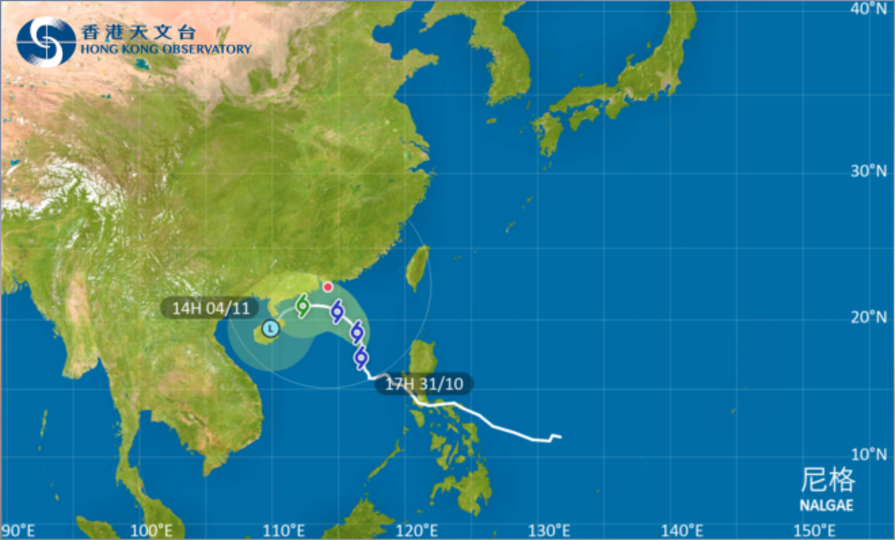

Here is the latest Tropical Cyclone Warning Bulletin issued by the Hong Kong Observatory.
The Strong Wind Signal, No. 3 was issued at 4:20 p.m.
This means that winds with mean speeds of 41 to 62 kilometres per hour are expected.
At 4 p.m., Severe Tropical Storm Nalgae was estimated to be about 630 kilometres south-southeast of Hong Kong (near 17.2 degrees north 116.8 degrees east) and is forecast to move north-northwest at about 10 kilometres per hour towards the northern part of the South China Sea.
In the past few hours, Nalgae steadily edged closer to the northern part of the South China Sea. Under the combined effect of Nalgae and the northeast monsoon, strong winds are expected to prevail generally over the territory tonight and tomorrow morning, with occasional gales on high ground. The Strong Wind Signal, No. 3 will remain in force at least until noon tomorrow (1 November). Seas are rough with swells. Members of the public are advised to stay away from the shoreline and not to engage in water sports. Those engaging in outdoor work or activities should also take note of the changes in weather.

According to the present forecast, Nalgae will edge rather close to the vicinity of the Pearl River Estuary later on Wednesday (2 November) and at first on Thursday (3 November). It is expected to weaken gradually. However, its distance from the Pearl River Estuary and the degree of weakening remain rather uncertain. The Observatory will closely monitor its movement and development, and assess the need of issuing a higher signal. Please stay on the alert and pay attention to the latest information on the tropical cyclone.
Dispatched by Hong Kong Observatory at 16:25 HKT on 31.10.2022